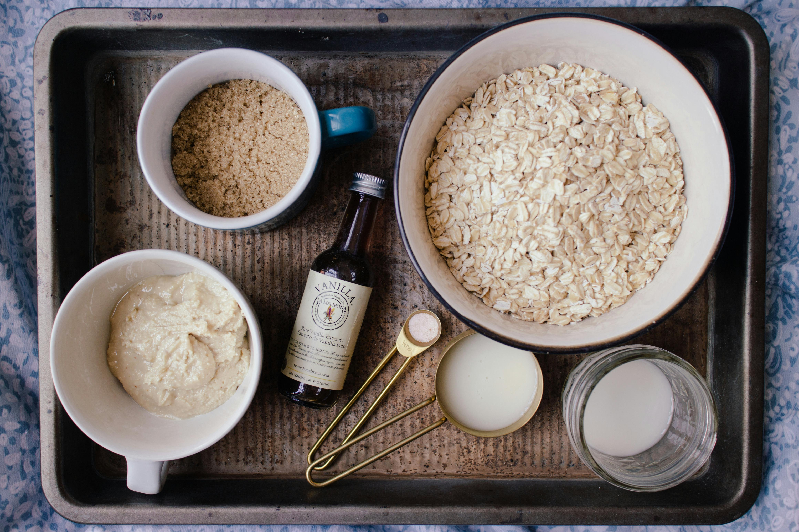

Maple and Brown Sugar Oatmeal Recipe

Description
This maple and brown sugar oatmeal recipe is easy to make, and sure to leave you satisfied and craving some more! From allrecipes.com
Ingredients
- 1 and a half cups water
- 3/4 cup instant oats
- 1 tablespoon packed dark brown sugar
- 1 tablespoon maple syrup
- Gather all ingredients.
- Bring water to a boil in a small pot. Add oats and cook, stirring, for 1 minute.
- Remove from heat and stir in brown sugar and maple syrup. Let sit until desired thickness is reached, 2 to 3 minutes.
All done!
Home